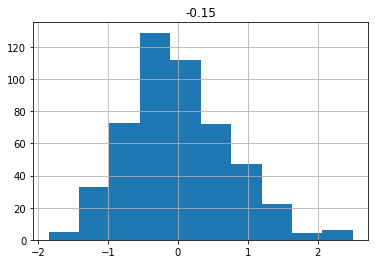

# This is a commentWavelets in Jupyter Notebooks
wavelets
jupyter
A notebook to show off the power of fastpages and jupyter.
This is a notebook cobbled together from information and code from the following sources:
- pywavelets
- Ahmet Taspinar’s guide for using wavelet in ML
- Alexander Sauve’s introduction to wavelet for EDA
Why?
This notebook was created from the links above to test out how fastpages handle a combination of data and images within a notebook, when that notebook is converted for easy web viewing by jekyll.
The above author’s code seemed like a good dry run and test of the fastpage’s conversion from jupyter notebook to blog post.
import numpy as np
import pandas as pd
from scipy.fftpack import fft
import matplotlib.pyplot as plt
import pywtdef plot_wavelet(time, signal, scales,
# waveletname = 'cmor1.5-1.0',
waveletname = 'gaus5',
cmap = plt.cm.seismic,
title = 'Wavelet Transform (Power Spectrum) of signal',
ylabel = 'Period (years)',
xlabel = 'Time'):
dt = time[1] - time[0]
[coefficients, frequencies] = pywt.cwt(signal, scales, waveletname, dt)
power = (abs(coefficients)) ** 2
period = 1. / frequencies
levels = [0.0625, 0.125, 0.25, 0.5, 1, 2, 4, 8]
contourlevels = np.log2(levels)
fig, ax = plt.subplots(figsize=(15, 10))
im = ax.contourf(time, np.log2(period), np.log2(power), contourlevels, extend='both',cmap=cmap)
ax.set_title(title, fontsize=20)
ax.set_ylabel(ylabel, fontsize=18)
ax.set_xlabel(xlabel, fontsize=18)
yticks = 2**np.arange(np.ceil(np.log2(period.min())), np.ceil(np.log2(period.max())))
ax.set_yticks(np.log2(yticks))
ax.set_yticklabels(yticks)
ax.invert_yaxis()
ylim = ax.get_ylim()
ax.set_ylim(ylim[0], -1)
cbar_ax = fig.add_axes([0.95, 0.5, 0.03, 0.25])
fig.colorbar(im, cax=cbar_ax, orientation="vertical")
plt.show()
def get_ave_values(xvalues, yvalues, n = 5):
signal_length = len(xvalues)
if signal_length % n == 0:
padding_length = 0
else:
padding_length = n - signal_length//n % n
xarr = np.array(xvalues)
yarr = np.array(yvalues)
xarr.resize(signal_length//n, n)
yarr.resize(signal_length//n, n)
xarr_reshaped = xarr.reshape((-1,n))
yarr_reshaped = yarr.reshape((-1,n))
x_ave = xarr_reshaped[:,0]
y_ave = np.nanmean(yarr_reshaped, axis=1)
return x_ave, y_ave
def plot_signal_plus_average(time, signal, average_over = 5):
fig, ax = plt.subplots(figsize=(15, 3))
time_ave, signal_ave = get_ave_values(time, signal, average_over)
ax.plot(time, signal, label='signal')
ax.plot(time_ave, signal_ave, label = 'time average (n={})'.format(5))
ax.set_xlim([time[0], time[-1]])
ax.set_ylabel('Signal Amplitude', fontsize=18)
ax.set_title('Signal + Time Average', fontsize=18)
ax.set_xlabel('Time', fontsize=18)
ax.legend()
plt.show()
def get_fft_values(y_values, T, N, f_s):
f_values = np.linspace(0.0, 1.0/(2.0*T), N//2)
fft_values_ = fft(y_values)
fft_values = 2.0/N * np.abs(fft_values_[0:N//2])
return f_values, fft_values
def plot_fft_plus_power(time, signal):
dt = time[1] - time[0]
N = len(signal)
fs = 1/dt
fig, ax = plt.subplots(figsize=(15, 3))
variance = np.std(signal)**2
f_values, fft_values = get_fft_values(signal, dt, N, fs)
fft_power = variance * abs(fft_values) ** 2 # FFT power spectrum
ax.plot(f_values, fft_values, 'r-', label='Fourier Transform')
ax.plot(f_values, fft_power, 'k--', linewidth=1, label='FFT Power Spectrum')
ax.set_xlabel('Frequency [Hz / year]', fontsize=18)
ax.set_ylabel('Amplitude', fontsize=18)
ax.legend()
plt.show()
dataset = "http://paos.colorado.edu/research/wavelets/wave_idl/sst_nino3.dat"
df_nino = pd.read_table(dataset)
N = df_nino.shape[0]
t0=1871
dt=0.25
time = np.arange(0, N) * dt + t0
signal = df_nino.values.squeeze()
scales = np.arange(1, 128)
plot_signal_plus_average(time, signal)
plot_fft_plus_power(time, signal)
plot_wavelet(time, signal, scales)# Create some fake data sets and show their fourier transforms (fft).
t_n = 1
N = 100000
T = t_n / N
f_s = 1/T
xa = np.linspace(0, t_n, num=int(N))
xb = np.linspace(0, t_n/4, num=int(N/4))
frequencies = [4, 30, 60, 90]
y1a, y1b = np.sin(2*np.pi*frequencies[0]*xa), np.sin(2*np.pi*frequencies[0]*xb)
y2a, y2b = np.sin(2*np.pi*frequencies[1]*xa), np.sin(2*np.pi*frequencies[1]*xb)
y3a, y3b = np.sin(2*np.pi*frequencies[2]*xa), np.sin(2*np.pi*frequencies[2]*xb)
y4a, y4b = np.sin(2*np.pi*frequencies[3]*xa), np.sin(2*np.pi*frequencies[3]*xb)
composite_signal1 = y1a + y2a + y3a + y4a
composite_signal2 = np.concatenate([y1b, y2b, y3b, y4b])
f_values1, fft_values1 = get_fft_values(composite_signal1, T, N, f_s)
f_values2, fft_values2 = get_fft_values(composite_signal2, T, N, f_s)
fig, axarr = plt.subplots(nrows=2, ncols=2, figsize=(12,8))
axarr[0,0].plot(xa, composite_signal1)
axarr[1,0].plot(xa, composite_signal2)
axarr[0,1].plot(f_values1, fft_values1)
axarr[1,1].plot(f_values2, fft_values2)
axarr[0,1].set_xlim(0, 150)
axarr[1,1].set_xlim(0, 150)
plt.tight_layout()
plt.show()# The El Nino Dataset
df_nino| -0.15 | |
|---|---|
| 0 | -0.30 |
| 1 | -0.14 |
| 2 | -0.41 |
| 3 | -0.46 |
| 4 | -0.66 |
| ... | ... |
| 498 | -0.22 |
| 499 | 0.08 |
| 500 | -0.08 |
| 501 | -0.18 |
| 502 | -0.06 |
503 rows × 1 columns
df_nino.describe()| -0.15 | |
|---|---|
| count | 503.000000 |
| mean | 0.000278 |
| std | 0.735028 |
| min | -1.850000 |
| 25% | -0.485000 |
| 50% | -0.070000 |
| 75% | 0.420000 |
| max | 2.500000 |
df_nino.hist()array([[<AxesSubplot:title={'center':'-0.15'}>]], dtype=object)